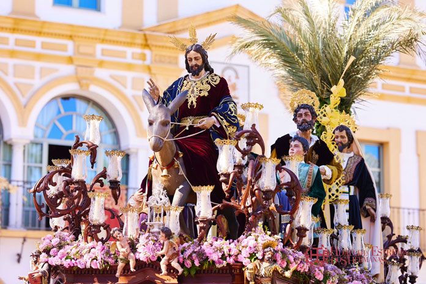

La Borriquita
Parroquia Santa María Magdalena
Real Hermandad de Nuestro Padre Jesús en su Sagrada Entrada en Jerusalen y María Santísima de la Estrella

Numero de hermanos
1200
Nazarenos
440
Autores
Nuestro Padre Jesús es obra de Manuel Pineda Calderón (1962), así como la imagen de San Juan Evangelista (1961) y Santiago (1962), San Pedro (1983) es de Francisco Buiza. María Santísima de la Estrella es obra de Manuel Pineda Calderón (1959).
Capataces
Jesús Rubio en el Misterio y Jesús García y Jose A.Sánchez en el Paso de Palio
Música
A.M. Nuestra Señora de la Estrella, tras el Señor y B.M. de Coria del Rio tras el Palio.
RECORRIDO
| Hora Aprox. | Cruz de guía |
|---|---|
| 17:00 | Salida |
| -- | Carrera Oficial |
| -- | Santa María Magdalena |
| -- | Melliza |
| 18:00 | Lope de Vega |
| -- | Aníbal González |
| -- | Santa María Magdalena |
| -- | Francesa |
| 19:00 | Calderón de la Barca |
| -- | Antonia Díaz |
| -- | Plaza de Menéndez Pelayo |
| 19:30 | Santa María Magdalena |
| -- | Canónigo |
| 20:00 | Antonia Díaz |
| 20:30 | Manuel de Falla |
| -- | Romera |
| -- | Plaza del Emigrante |
| 21:00 | San Sebastián |
| -- | Mena Martínez |
| -- | Churruca |
| -- | Plaza del Hidalgo Carret |
| 21:30 | Álvarez Quintero |
| -- | Tarancón |
| -- | Pereda |
| 22:00 | Real Utrera |
| -- | Santa Ana |
| 00:30 | Entrada |